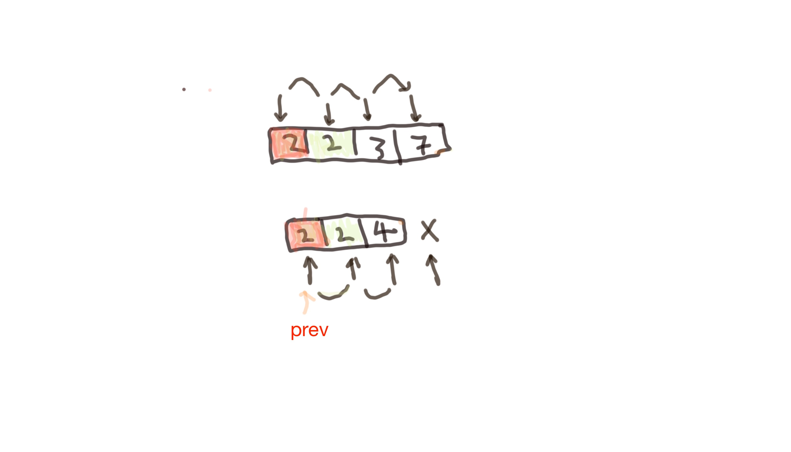

Intersection of two sorted lists
1. Iterate from the small elems to large elems
2. If compare each elem on each list,
If element a is smaller than the element b,
then increase the index of list contains the 'a' element
else if two elements are the same
then add the element to a list if the element is not equal to the last 'intersected element'
public static List intersect(Integer[] a1, Integer[] a2){
List list = new ArrayList<>();
if(a1 != null && a2 != null){
int len1 = a1.length;
int len2 = a2.length;
int i=0, j=0;
Integer prev = null;
while(i < len1 && j < len2){
if(a1[i] < a2[j]){
i++;
}else if(a1[i] > a2[j]){
j++;
}else{
if(prev == null){
list.add(a1[i]);
}else{
if(prev != a1[i]){
list.add(a1[i]);
}
}
prev = a1[i];
i++;
j++;
}
}
}
return list;
}
